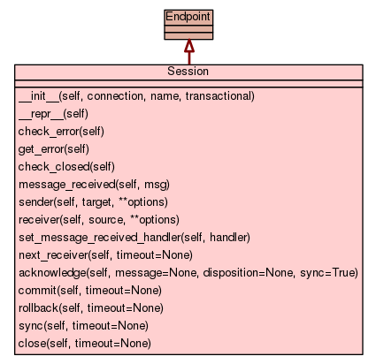

Class Session
source code

Sessions provide a linear context for sending and receiving Messages. Messages are sent and received using the Sender.send and Receiver.fetch methods of the Sender
and Receiver objects associated with a Session.
Each Sender and Receiver is created by supplying either a target or
source address to the sender and receiver methods of the Session. The address is supplied
via a string syntax documented below.
Addresses
An address identifies a source or target for messages. In its
simplest form this is just a name. In general a target address may also
be used as a source address, however not all source addresses may be
used as a target, e.g. a source might additionally have some filtering
criteria that would not be present in a target.
A subject may optionally be specified along with the name. When an
address is used as a target, any subject specified in the address is
used as the default subject of outgoing messages for that target. When
an address is used as a source, any subject specified in the address is
pattern matched against the subject of available messages as a filter
for incoming messages from that source.
The options map contains additional information about the address
including:
-
policies for automatically creating, and deleting the node to which
an address refers
-
policies for asserting facts about the node to which an address
refers
-
extension points that can be used for sender/receiver configuration
Mapping to AMQP 0-10
The name is resolved to either an exchange or a queue by querying
the broker.
The subject is set as a property on the message. Additionally, if
the name refers to an exchange, the routing key is set to the
subject.
Syntax
The following regular expressions define the tokens used to parse
addresses:
LBRACE: \{
RBRACE: \}
LBRACK: \[
RBRACK: \]
COLON: :
SEMI: ;
SLASH: /
COMMA: ,
NUMBER: [+-]?[0-9]*\.?[0-9]+
ID: [a-zA-Z_](?:[a-zA-Z0-9_-]*[a-zA-Z0-9_])?
STRING: "(?:[^\\"]|\\.)*"|'(?:[^\\']|\\.)*'
ESC: \\[^ux]|\\x[0-9a-fA-F][0-9a-fA-F]|\\u[0-9a-fA-F][0-9a-fA-F][0-9a-fA-F][0-9a-fA-F]
SYM: [.#*%@$^!+-]
WSPACE: [ \n\r\t]+
The formal grammar for addresses is given below:
address = name [ "/" subject ] [ ";" options ]
name = ( part | quoted )+
subject = ( part | quoted | "/" )*
quoted = STRING / ESC
part = LBRACE / RBRACE / COLON / COMMA / NUMBER / ID / SYM
options = map
map = "{" ( keyval ( "," keyval )* )? "}"
keyval = ID ":" value
value = NUMBER / STRING / ID / map / list
list = "[" ( value ( "," value )* )? "]"
This grammar resuls in the following informal syntax:
<name> [ / <subject> ] [ ; <options> ]
Where options is:
{ <key> : <value>, ... }
And values may be:
-
numbers
-
single, double, or non quoted strings
-
maps (dictionaries)
-
lists
Options
The options map permits the following parameters:
<name> [ / <subject> ] ; {
create: always | sender | receiver | never,
delete: always | sender | receiver | never,
assert: always | sender | receiver | never,
mode: browse | consume,
node: {
type: queue | topic,
durable: True | False,
x-declare: { ... <declare-overrides> ... },
x-bindings: [<binding_1>, ... <binding_n>]
},
link: {
name: <link-name>,
durable: True | False,
reliability: unreliable | at-most-once | at-least-once | exactly-once,
x-declare: { ... <declare-overrides> ... },
x-bindings: [<binding_1>, ... <binding_n>],
x-subscribe: { ... <subscribe-overrides> ... }
}
}
Bindings are specified as a map with the following options:
{
exchange: <exchange>,
queue: <queue>,
key: <key>,
arguments: <arguments>
}
The create, delete, and assert policies specify who should perfom
the associated action:
-
always: the action will always be performed
-
sender: the action will only be performed by the sender
-
receiver: the action will only be performed by the
receiver
-
never: the action will never be performed (this is the
default)
The node-type is one of:
-
topic: a topic node will default to the topic exchange,
x-declare may be used to specify other exchange types
-
queue: this is the default node-type
The x-declare map permits protocol specific keys and values to be
specified when exchanges or queues are declared. These keys and
values are passed through when creating a node or asserting facts
about an existing node.
Examples
A simple name resolves to any named node, usually a queue or a
topic:
my-queue-or-topic
A simple name with a subject will also resolve to a node, but the
presence of the subject will cause a sender using this address to set
the subject on outgoing messages, and receivers to filter based on
the subject:
my-queue-or-topic/my-subject
A subject pattern can be used and will cause filtering if used by
the receiver. If used for a sender, the literal value gets set as the
subject:
my-queue-or-topic/my-*
In all the above cases, the address is resolved to an existing
node. If you want the node to be auto-created, then you can do the
following. By default nonexistent nodes are assumed to be queues:
my-queue; {create: always}
You can customize the properties of the queue:
my-queue; {create: always, node: {durable: True}}
You can create a topic instead if you want:
my-queue; {create: always, node: {type: topic}}
You can assert that the address resolves to a node with particular
properties:
my-transient-topic; {
assert: always,
node: {
type: topic,
durable: False
}
}
|
|
| __init__(self,
connection,
name,
transactional) |
source code
|
|
|
|
|
|
|
|
|
|
|
|
|
|
|
|
|
|
Sender
|
|
|
Receiver
|
|
|
|
|
|
|
|
|
|
|
|
|
|
|
|
|
|
|
|
|
|
|
|
Creates a Sender that may be used to send Messages to the specified target.
- Parameters:
target (str) - the target to which messages will be sent - Returns: Sender
- a new Sender for the specified target
- Decorators:
|
|
Creates a receiver that may be used to fetch Messages from the specified source.
- Parameters:
- Returns: Receiver
- a new Receiver for the specified source
- Decorators:
|
set_message_received_handler(self,
handler)
| source code
|
Register a callback that will be invoked when a message arrives on the
session. Use with caution: since this callback is invoked in the context
of the driver thread, it is not safe to call any of the public messaging
APIs from within this callback. The intent of the handler is to provide
an efficient way to notify the application that a message has arrived.
This can be useful for those applications that need to schedule a task to
poll for received messages without blocking in the messaging API.
- Decorators:
|
acknowledge(self,
message=None,
disposition=None,
sync=True)
| source code
|
Acknowledge the given Message. If message is None, then all unacknowledged
messages on the session are acknowledged.
- Parameters:
message (Message) - the message to acknowledge or Nonesync (boolean) - if true then block until the message(s) are acknowledged - Decorators:
|
|
Commit outstanding transactional work. This consists of all message
sends and receives since the prior commit or rollback.
- Decorators:
|
|
Rollback outstanding transactional work. This consists of all message
sends and receives since the prior commit or rollback.
- Decorators:
|
|
Sync the session.
- Decorators:
|
|
Close the session.
- Decorators:
|